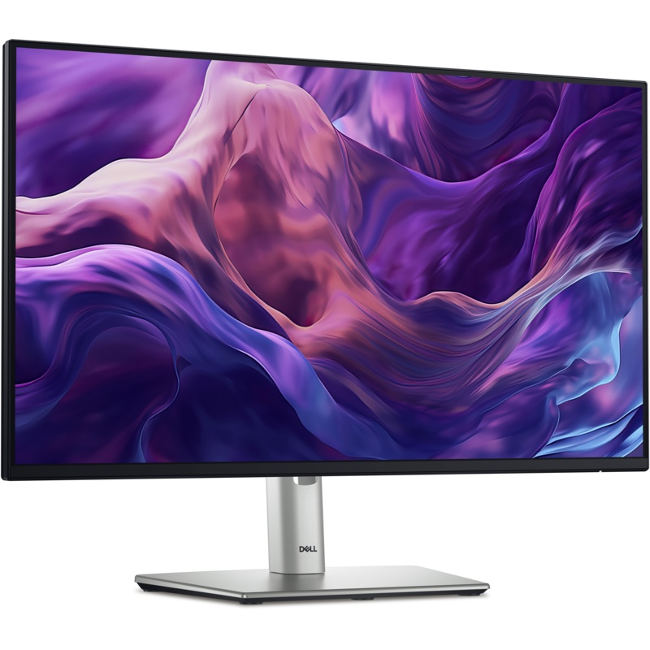

→ חזרה למסכים
Dell Pro 24 Plus P2425H

99% sRGBDell Pro 24 Plus P2425H
24 אינץ' · 99% sRGB · רכזת USB
מסך מקצועי מסדרת Dell Pro Plus: צבעים מדויקים (99% sRGB), ניגודיות גבוהה, רכזת USB מובנית ומעמד מתכוונן לכל כיוון. בנוי לשנים של עבודה יומיומית במשרד.
🎨
צבעים מדויקים
99% sRGB
כיסוי צבע מלא וניגודיות 1,500:1: תמונה חיה ומדויקת יותר ממסך משרדי רגיל.
🔌
רכזת USB מובנית
4 יציאות
3 יציאות USB-A ויציאת USB-C (15W): מקלדת, עכבר ודיסק מתחברים ישירות למסך.
- ↕️מעמד מתכוונן 15 ס"מגובה, הטיה, סיבוב ±45° ו-Pivot
- 🎞IPS 100Hzתנועה חלקה ופחות הבהוב
- 👁TÜV 4 כוכביםComfortView Plus לנוחות העיניים
- 🛡מסך קשיח 3Hציפוי נגד השתקפויות ושריטות
מה מבדיל אותו ממסך רגיל?
🎨
איכות תמונה
99% sRGB ו-1,500:1 לעומת כ-72% NTSC ו-1,000:1 במסכים בסיסיים.
🧍
ארגונומיה מלאה
גובה עד 15 ס"מ, סיבוב לצדדים ולאורך.
🔌
שולחן מסודר
רכזת USB מקצרת כבלים ומפנה יציאות במחשב.
🏢
סדרה עסקית
Dell Pro: אמינות וניהול מרחוק לארגונים.
אין רמקולים מובנים. יציאת ה-USB-C במסך היא לחיבור ציוד וטעינה (15W), לא לחיבור מסך מהמחשב.
מפרט טכני
| גודל | 23.8 אינץ' (24) |
|---|---|
| רזולוציה | Full HD 1920×1080 |
| פאנל | IPS, ציפוי נגד השתקפויות בקשיחות 3H |
| קצב רענון | 100Hz |
| זמן תגובה | 5ms (Fast) · 8ms |
| בהירות | 250 ניט |
| ניגודיות | 1,500:1 |
| צבעים | 99% sRGB |
| מסך | HDMI 1.4 · DisplayPort 1.2 · VGA |
|---|---|
| רכזת USB | USB-B (למחשב) · 3× USB-A 5Gbps · USB-C 5Gbps עם 15W |
| מעמד | גובה עד 15 ס"מ · הטיה -5° עד 21° · סיבוב ±45° · Pivot ±90° |
| נוחות עיניים | ComfortView Plus, TÜV 4 כוכבים, ללא הבהוב |
| דגם | Dell Pro 24 Plus Monitor P2425H |
המפרט לפי Dell ועשוי להשתנות. התמונות להמחשה בלבד.